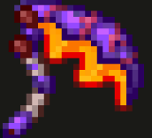
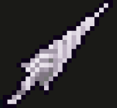
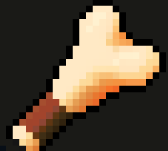
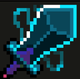
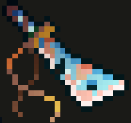
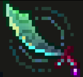

These dagger are really good for fast moving weapons but when I've used them they don't do a lot of damage.
I LOVE this weapon butt it does have a big wind up time thte you have to prepare for so it might not be the best if you like faster weapons.
This is a good basic one but you have to have the Castlevania DLC to get it, I like it because it has the bleed affect on it no matter the grade.
I like this one because it's aheavy hitter without a big wind up time and on the thrid hit you do a spin move that does damage and is fun to watch.
This one I don't really think is good nor bad it's a nice heavy hitter but it's to slow for me.
This is just the started sword you get its not good nor bad like the broadsword.
I like this one when I can get it because it has a poison effect and is fast and does good damage.
Here is the wiki page if you want to check out more weapons.
Dead cells Wiki